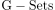
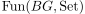
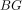
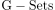
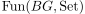
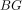
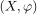
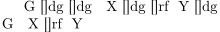

Category of G-Sets as functor category
1. Proposition
Let  be a group.
Then  the Category of G-Sets is isomorphic to the functor category , where  is the categorification of the group
be a group.
Then  the Category of G-Sets is isomorphic to the functor category , where  is the categorification of the group
see:
2. Proof
2.1. functor
for a g-set  there exists the identification with a functor, $(X)$d
for a morphism  we define the natural transformation
we define the natural transformation

which commutes by definition of
2.2. isomorphism in category cat as surjective, fully faithful functor
definitions TODO